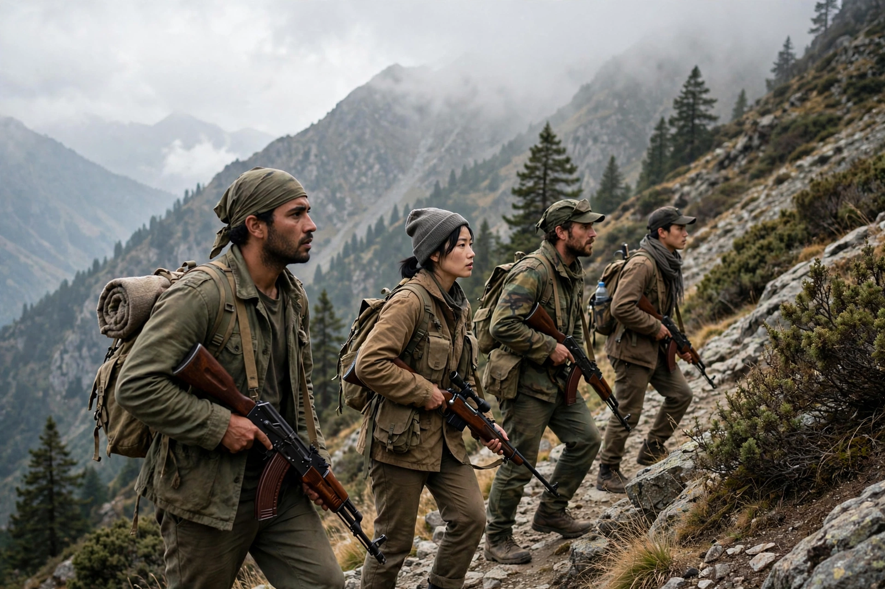

| Asymmetric warfare | |
| Definition | Conflict between belligerents of significantly unequal military capability or strategy |
|---|---|
| Typical weaker-side methods | Guerrilla tactics, terrorism, ambush, IEDs, blending with civilian populations |
| Related concepts | Guerrilla warfare, insurgency, counterinsurgency, fourth-generation warfare |

Asymmetric warfare is a type of conflict between belligerents whose military capabilities, resources, or strategies differ significantly. The weaker party typically seeks to exploit the stronger party's vulnerabilities — political sensitivity to casualties, logistical overextension, legal and moral constraints — rather than defeating it in direct battle. The term gained wide currency in U.S. defense analysis in the 1990s and after the September 11 attacks.
Asymmetric conflicts often feature non-state actors such as insurgent movements, militias, and terrorist organizations fighting state militaries. The weaker side avoids decisive engagement, disperses among civilians, and uses surprise attacks: ambushes, sniping, suicide bombings, and improvised explosive devices (IEDs). Victory for the weaker side usually means outlasting the opponent's political will rather than destroying its forces — a strategy summarized in the saying attributed to insurgents facing a superpower: "You have the watches, we have the time."
Examples often cited include the American Revolutionary War, in which colonial militia supplemented the Continental Army against British regulars; the Peninsular War in Spain (which gave English the word guerrilla, "little war"); the Vietnam War, where the Viet Cong and North Vietnam prevailed over the United States and South Vietnam; the Soviet–Afghan War (1979–1989), in which mujahideen fighters with foreign support forced a Soviet withdrawal; and the Iraq and Afghanistan wars of the 2000s–2020s, where insurgencies used IEDs and suicide attacks against coalition forces.
Thinkers from Sun Tzu to Mao Zedong — whose theory of protracted people's war formalized guerrilla strategy — have analyzed how the weak can defeat the strong. Counterinsurgency (COIN) doctrine, restated in the U.S. Army/Marine Corps manual FM 3-24 (2006), emphasizes protecting the population, political legitimacy, and intelligence over firepower. Asymmetry also applies between states: a weaker state may use proxies, cyber operations, or anti-access/area-denial weapons such as anti-ship missiles to offset a stronger navy.
Asymmetric methods raise issues under the laws of armed conflict, including perfidy, the use of human shields, and the status of fighters who do not distinguish themselves from civilians. Stronger parties' responses — targeted killing by drone, mass detention, collective punishment — have likewise been contested legally and ethically.